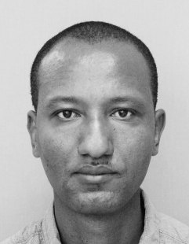

Des données fiablesReliable data
Problème : des bases incohérentes ralentissent les décisions. Vous obtenez : données nettoyées, contrôlées et documentées.Problem: inconsistent datasets slow decisions. You get: cleaned, validated, documented data.
Data Analyst · Statisticien-démographeData Analyst · Statistician-Demographer
Spécialiste des enquêtes ménages (MICS), des recensements (RGPH) et des projections démographiques. J'ai travaillé avec l'UNICEF, l'UNFPA, la GIZ et l'ANSADE. Disponible immédiatement, mobile à l'international.Specialist in household surveys (MICS), censuses (RGPH) and demographic projections. I have worked with UNICEF, UNFPA, GIZ and ANSADE. Available immediately, mobile internationally.

Problème : des bases incohérentes ralentissent les décisions. Vous obtenez : données nettoyées, contrôlées et documentées.Problem: inconsistent datasets slow decisions. You get: cleaned, validated, documented data.
Problème : trop de tableaux, peu de lecture. Vous obtenez : indicateurs clés, pondérés et expliqués.Problem: too many tables, little insight. You get: weighted, explained key indicators.
Problème : planifier sans connaître la population de demain. Vous obtenez : projections à 30 ans avec hypothèses claires.Problem: planning without knowing tomorrow's population. You get: 30-year projections with explicit assumptions.
Problème : suivre malnutrition, vaccination et santé reproductive. Vous obtenez : analyses ENA for SMART, IPC et indicateurs de santé.Problem: tracking malnutrition, vaccination and reproductive health. You get: ENA for SMART, IPC and health indicator analysis.
Problème : l'information reste dans des fichiers. Vous obtenez : tableaux de bord Power BI et cartes QGIS lisibles.Problem: insight stays buried in files. You get: readable Power BI dashboards and QGIS maps.
Problème : collecte de qualité inégale. Vous obtenez : masques de saisie, outils d'enquête et supervision de la collecte.Problem: uneven field data quality. You get: data-entry forms, survey tools and field supervision.
Contexte → mon rôle → méthode → résultat → impact.Context → my role → method → result → impact.
Enquête nationale auprès des ménages (UNICEF) pour mesurer la situation des enfants, des femmes et des hommes.National household survey (UNICEF) measuring the situation of children, women and men.
Projection de la population à 30 ans et analyse thématique des données du recensement.30-year population projection and thematic analysis of census data.
Suivi des services de santé et de protection dans les localités de deux wilayas de Mauritanie, Hodh Ech Chargui et Guidimakha, où la présence de réfugiés maliens est forte (fév. 2025 – août 2026).Monitoring health and protection services in localities of two Mauritanian regions, Hodh Ech Chargui and Guidimakha, which host a large Malian refugee population (Feb 2025 – Aug 2026).
Analyse de la situation (nov. 2025 – fév. 2026) et projections jusqu'en octobre 2026 selon la classification IPC.Situation analysis (Nov 2025 – Feb 2026) and projections to October 2026 using the IPC classification.
Contrôle de plausibilité des données anthropométriques et prévalence de la malnutrition aiguë.Anthropometric plausibility checks and acute malnutrition prevalence.
Sites vitrines et applications conçus avec Claude, Claude Code et Antigravity, publiés sur Hostinger ou Vercel.Showcase sites and apps built with Claude, Claude Code and Antigravity, published on Hostinger or Vercel.
Données simulées – démonstration.Simulated data – demonstration. 1 300 ménages et 13 régions fictifs. Ces chiffres ne sont pas des résultats officiels de MICS 7.1,300 fictional households and 13 regions. These are not official MICS 7 results.
KoboToolbox · KoboCollect · CSPro
R (expertexpert) · Stata · SPSS · Python · SQL
DemProj · Spectrum · PASEX
ENA for SMART · IPC
QGIS
Power BI · Excel
NVivo · ATLAS.ti
Claude · Antigravity · Git/GitHub · Vercel · Hostinger
Aussi : échantillonnage et pondération, qualité des données, méthodes et pratique épidémiologiques. Langues : français, arabe, anglais.Also: sampling and weighting, data quality, epidemiological methods and practice. Languages: French, Arabic, English.
Master 2 Économie appliquée (Bordeaux) · DESS Démographie (IFORD) · DU Santé publique (ISPED, Bordeaux) · Maîtrise Mathématiques (Nouakchott)MSc Applied Economics (Bordeaux) · Postgraduate Diploma in Demography (IFORD) · University Diploma in Public Health (ISPED, Bordeaux) · Master's in Mathematics (Nouakchott)
Je maîtrise tout le cycle : échantillonnage, collecte, analyse, restitution.I cover the full cycle: sampling, collection, analysis, reporting.
Une double expertise rare : méthodes de population et outils modernes.A rare mix: population methods and modern tooling.
À l'aise avec MICS, IPC, SMART et les cadres des Nations Unies.Comfortable with MICS, IPC, SMART and UN frameworks.
Disponible immédiatement, mobile à l'international.Available immediately, mobile internationally.
Saint-Denis (France) · Disponible immédiatementAvailable immediately